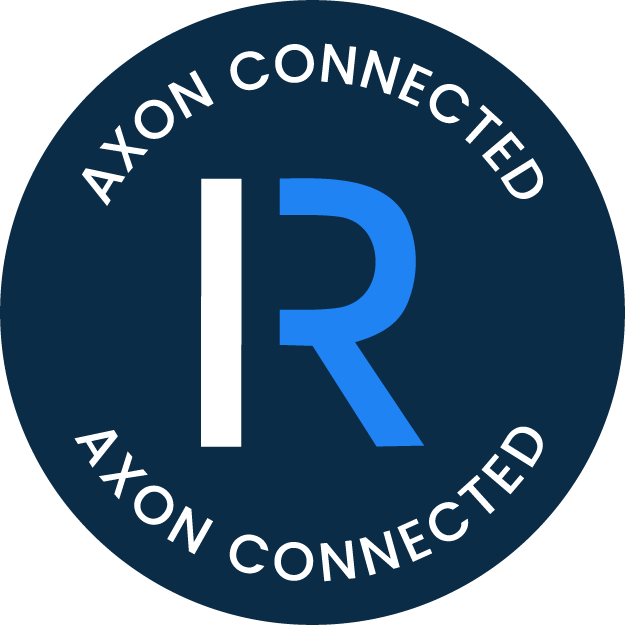
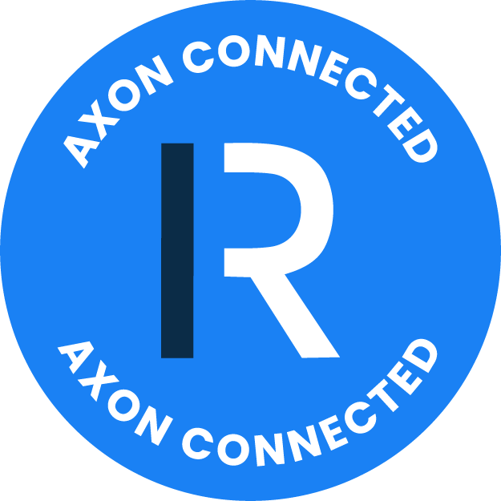
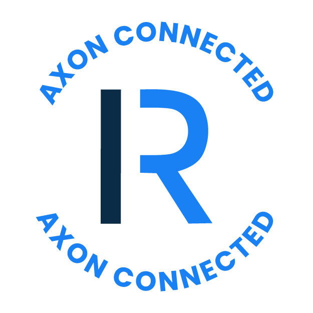
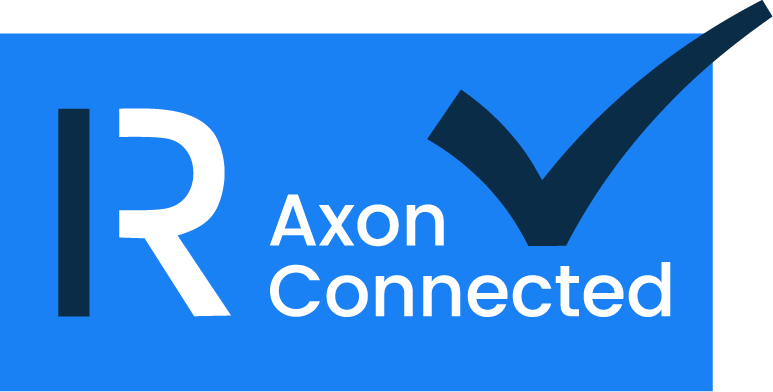
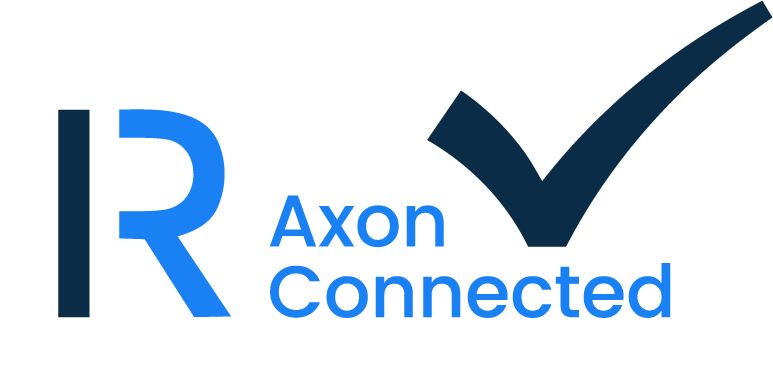

The Axon Connected badge lets vendors show health systems that connecting to them is already documented: the vendor has published an integration playbook in Rhapsody Axon™ Broadcast. It is a partner resource that vendors display on their own materials, so these rules are written for them as much as for us. Use only the official files, from the Axon Broadcast Badge library on SharePoint (SVG and PNG, with the vendor guidelines PDF).
| The badge shows | The badge does not show |
|---|---|
| The vendor has published an integration playbook in Rhapsody Axon™ Broadcast. | That Rhapsody has certified, validated, or approved the vendor’s product, security, or compliance. |
| Health systems can ask Axon how to connect to that vendor and get answers from the playbook. | That Rhapsody endorses the vendor or has a partnership with them. |
| The playbook is visible to the organizations the vendor chose. | That any integration will be fast, complete, or guaranteed. |
Conditions of use. Published: the vendor has a live playbook in Axon Broadcast. Current: the playbook’s specs and contacts are kept up to date. Linked: the badge links to the vendor’s playbook page. Taken down if unpublished: the badge comes down as soon as the playbook is no longer live.
Circles suit small spaces; bars suit wider layouts. Pick the badge that contrasts with its background.

navy-circle
blue-circle
white-circle
blue-bar
white-barThe PNGs are also in this design system under assets/axon-badge/; take the SVGs and the 1× and 2× PNGs from the library.
| Where | Suggested badge |
|---|---|
| Website footer or integrations page | Blue Bar, or White Bar on a dark footer |
| Product sign-in or settings | Blue Circle or Navy Circle |
| RFP and questionnaire responses | Blue Bar on a white cover page |
| Email signature | Navy Circle at 64px |
| Decks and sales sheets | White Bar or White Circle on dark slides |
Link and alt text. Link the badge to the vendor’s playbook page in the Directory, and use “Axon Connected badge” as the alt text:
The badge says a playbook is published. Keep the words around it just as specific.
| Approved wording | Do not say |
|---|---|
| “Our integration playbook is published in Rhapsody Axon™ Broadcast.” | “Rhapsody certified” or “Rhapsody approved” |
| “Health systems can ask Axon how to connect with us.” | “Validated by Axon” |
| “Find our playbook in the Directory.” | “Guaranteed integration” or “instant connection” |
Request: the vendor submits company, work email, and playbook link. Confirm: Rhapsody checks the playbook is published. Receive: the kit arrives by email with all five badges as SVG and as PNG at 1× and 2×, plus the vendor guidelines PDF. Maintain: the vendor keeps the playbook current and removes the badge if it is unpublished. Rhapsody may update or retire a badge (and will notify vendors), and may ask a vendor to remove it if it is used outside these guidelines. Questions: marketing@rhapsody.health.
Source: Axon Connected badge usage guidelines (October 2026), in examples/brand/ in the design system repository.